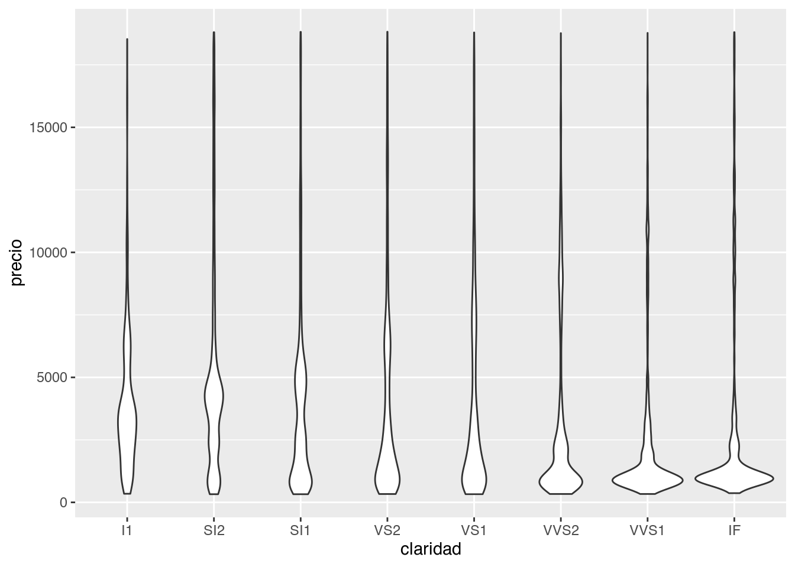

Hasta ahora, y asumiendo que recorriste los episodios anteriores, visualizamos los datos tal cual vienen en la base de datos o con ayuda de {dplyr} para transformarlos. Pero como adelantamos con geom_smooth(), hay ciertas transformaciones comunes que se pueden hacer usando {ggplot2}.
De paso vamos a usar datos incluidos en el paquete datos (muchos paquetes traen bases de datos para probar cosas, ¡este en particular son todas bases de datos en español!) que podés descargar como siempre con install.packages("datos"). Los datos diamantes contiene información sobre ~ 54000 diamantes, incluido el precio, el quilate, el color, la claridad y el corte de cada uno.
library(ggplot2)
library(dplyr)
library(datos)
str(diamantes)
## tibble [53,940 × 10] (S3: tbl_df/tbl/data.frame)
## $ precio : int [1:53940] 326 326 327 334 335 336 336 337 337 338 ...
## $ quilate : num [1:53940] 0.23 0.21 0.23 0.29 0.31 0.24 0.24 0.26 0.22 0.23 ...
## $ corte : Ord.factor w/ 5 levels "Regular"<"Bueno"<..: 5 4 2 4 2 3 3 3 1 3 ...
## $ color : Ord.factor w/ 7 levels "D"<"E"<"F"<"G"<..: 2 2 2 6 7 7 6 5 2 5 ...
## $ claridad : Ord.factor w/ 8 levels "I1"<"SI2"<"SI1"<..: 2 3 5 4 2 6 7 3 4 5 ...
## $ profundidad: num [1:53940] 61.5 59.8 56.9 62.4 63.3 62.8 62.3 61.9 65.1 59.4 ...
## $ tabla : num [1:53940] 55 61 65 58 58 57 57 55 61 61 ...
## $ x : num [1:53940] 3.95 3.89 4.05 4.2 4.34 3.94 3.95 4.07 3.87 4 ...
## $ y : num [1:53940] 3.98 3.84 4.07 4.23 4.35 3.96 3.98 4.11 3.78 4.05 ...
## $ z : num [1:53940] 2.43 2.31 2.31 2.63 2.75 2.48 2.47 2.53 2.49 2.39 ...
Gráficos de frecuencias
Este es un gráfico de barras construido usando la función geom_bar(). En el eje x muestra el corte de los diamantes y en el eje y la cantidad (count en inglés) de diamantes en cada categoría. Pero diamantes no tiene una variable que se llame count y tampoco la generamos nosotros. ¡Es calculada internamente por {ggplot2}!
ggplot(data = diamantes, aes(x = corte)) +
geom_bar()

Cómo el gráfico de barras, también podemos graficar histogramas con geom_histogram() y polígonos de frecuencia con geom_density() para visualizar la cantidad de observaciones que caen en cada categoría (si la variable es discreta como el caso del corte de los diamantes) o rango de valores (para variables continuas).
Un ejemplo de variable continua es el precio de los diamantes, veamos como se ve un histograma y de paso le cambiamos el color a las barras, pero ojo, solo al borde.
ggplot(diamantes, aes(precio)) +
geom_histogram(color = "darkorange")
## `stat_bin()` using `bins = 30`. Pick better value with `binwidth`.

Primer desafío
¿Notaste el mensaje que devuelve el gráfico?
`stat_bin() using bins = 30. Pick better value with binwidth.`
Esta geometría tiene dos argumentos importantes bins y binwidth. Cambiá el valor de alguno de los dos argumentos y volvé a generar el gráfico, ¿que rol juegan los argumentos?
También podés revisar la documentación.
Además de contar la cantidad de elementos, {ggplot2} puede calcular muchas otras transformaciones sobre los datos. Por ejemplo si quisiéramos el porcentaje o la proporción que le corresponde a cada categoría de corte respecto del total podemos hacerlo mapeando esa transformación prop al eje y con la función stat().
ggplot(data = diamantes, aes(x = corte)) +
geom_bar(aes(y = stat(prop), group = 1))

Fijate que la variable prop no es una columna de diamantes sino que es el nombre de una variable computada por geom_bar(), por eso hay que rodearla de la función stat(). El nombre de las variables computadas por cada geoms está en su documentación (abajo de todo, antes de los ejemplos).
Ahora podríamos decir que el 40% de los diamantes en la base de datos tienen un corte ideal. Además de la función stat() agregamos group = 1 y esto no fue sin querer. Probá correr el gráfico sin ese argumento.
Al incluir group = 1, {ggplot2} junta todas las observaciones en un único grupo (con el valor 1) y calcula la proporción o el porcentaje que representa cada corte respecto del total de diamantes. Si no incluimos eso, {ggplot2} asumirá que cada categoría de corte es un grupo independiente y el cálculo del porcentaje también lo hará por separado.
Posición
Ya vimos que la estética del color sólo modifica el borde de las barras, si quisieras modificar el relleno necesitamos cambiar el fill y al igual que antes podemos mapear una variable a esta estética.
ggplot(data = diamantes) +
geom_bar(aes(x = corte, fill = claridad))
Al mapear una variable distinta, la claridad de los diamantes, podemmos visualizar información extra. Este “apilamiento” de las barras es la opción de posición por defecto position = "stack", pero podrías usar una de las otras tres opciones: "identity", "dodge" o "fill".
position = "identity" colocará cada barra comenzando en cero quedando todas superpuestas. Para ver esa superposición, debemos hacer que las barras sean ligeramente transparentes configurando el alpha a un valor pequeño.
ggplot(diamantes) +
geom_bar(aes(x = corte, fill = claridad), alpha = 0.2, position = "identity")
position = "fill" apila las barras al igual que position = "stack", pero transforma los datos para que cada conjunto de barras apiladas tenga la misma altura. Esto hace que sea más fácil comparar proporciones entre grupos.
ggplot(diamantes) +
geom_bar(aes(x = corte, fill = claridad), position = "fill")
position = "dodge" coloca las barras una al lado de la otra. Esto hace que sea más fácil comparar valores individuales.
ggplot(diamantes) +
geom_bar(aes(x = corte, fill = claridad), position = "dodge")

Gráficos de líneas suavizas
Cómo vimos antes, los gráficos de líneas suavizadas (smoothers) ajustan un modelo a los datos y luego grafican las predicciones del modelo. Sin entrar en muchos detalles, se puede aplicar distintos modelos y la elección del mismo dependerá de los datos.
ggplot(diamantes, aes(quilate, precio)) +
geom_point() +
geom_smooth()
## `geom_smooth()` using method = 'gam' and formula 'y ~ s(x, bs = "cs")'

Gráficos de caja
Los diagramas de caja, mejor conocidos como boxplots calculan un resumen robusto de la distribución y luego muestran una caja con formato especial.
La línea central de la caja corresponde a la mediana (el valor que toma el dato central) y los extremos de la caja son los cuartiles 1 y 3, definiendo así el rango intercuartil (IQR). Los extremos están definidos como el valor observado que no esté más lejos de 1.5*IQR de la mediana y los puntos son los las observaciones que se escapan de ese rango, que pueden ser considerados outliners o valores extremos.
ggplot(diamantes, aes(claridad, precio)) +
geom_boxplot()

Los boxplot dan muchísima información sobre los datos pero al mismo tiempo esconden la cantidad de observaciones que se usaron para generarlos y en particular cual es la frecuencia a lo largo del eje y. Por esta razón también existen geom_violin() y geom_jitter().
Segundo desafío
- Volvé a graficar la distribución del precio para cada tipo de claridad pero ahora usando
geom_violin() y geom_jitter().
- ¿Qué ventajas y desventajas encuentran respecto de
geom_boxplot()?
ggplot(diamantes, aes(claridad, precio)) +
geom_violin()

ggplot(diamantes, aes(claridad, precio)) +
geom_jitter()

Cuando nuestra base de datos es muy grande corremos el riesgo de generar de que los elementos del gráfico estén tan juntos que se solapen y no se vean. Esto se conoce como overplotting. La base de datos diamantes tiene 53940 observaciones y al graficar un punto por cada una, aún si están separados por la claridad, quedan superpuestos.
Para resolver este problema se suele modificar la estética de los elementos, cambiando el tamaño o size para que ocupen menos lugar y se vean mejor, cambiando la forma o shape por alguna que no tenga relleno y permita ver los elemenos que hay atrás o modificando la transparencia o alpha por la misma razón. En bases de datos tan grandes como la de diamantes, muchas veces hay que utilizar varios de estos recursos.
Graficando en múltiples paneles
Vimos que es posible graficar más de dos variables en un gráfico mapeando una variable al color o por ejemplo el tipo de línea o linetype
ggplot(diamantes, aes(quilate, precio)) +
geom_point(aes(color = color))

En este caso no solo visualizamos la relación entre el precio y el quilate del diamante, también podemos ver que rol juega el color. También podríamos haber intentando resolver el problema generando un gráfico por cada color filtrando las observaciones correspondientes.
diamantes %>%
filter(color == "D") %>%
ggplot(aes(quilate, precio)) +
geom_point(aes(color = color))

Pero sería muchísimo trabajo si tenemos que hacer esto para cada una de las 7 categorías de color. La buena noticia es que {ggplot2} tiene un par de funciones justo para resolver este problema:
ggplot(diamantes, aes(quilate, precio)) +
geom_point(aes(color = color)) +
facet_wrap(~color)

Esta nueva capa con facet_wrap() divide al gráfico inicial en 7 paneles o facets, uno por cada color. Esta función requiere saber que variable será la responsable de separar los paneles y para eso se usa la notación de funciones de R: ~color. Esto se lee como generar paneles “en función del color”.
¿Y si quisieramos generar paneles a partir de 2 variables? Para eso existe facet_grid(). En este gráfico generamos paneles viendo la “relación entre el corte y el color” y por ejemplo en el primer panel arriba a la izquierda podremos observar los diamantes que son al mismo tiempo de color D y corte Regular. En este caso mapear la variable color al color de los diamantes no parece ser encesario ya que cada columna ya nos permite identificar eso, sin embargo en algunos casos ayuda a leer el gráfico más rápido.
ggplot(diamantes, aes(quilate, precio)) +
geom_point(aes(color = color)) +
facet_grid(corte~color)

Tercer desafío
Generá boxplots para analizar como se comporta el precio según la claridad para cada tipo de corte como se ve acá.

LS0tCnRpdGxlOiAiVmlzdWFsaXphY2nDs24gZGUgZGF0b3MgY29uIHtnZ3Bsb3QyfSBJSSIKb3V0cHV0OiAKICBodG1sX2RvY3VtZW50OgogICAgY29kZV9kb3dubG9hZDogdHJ1ZQogICAgdG9jOiB0cnVlCiAgICB0b2NfZmxvYXQ6IGZhbHNlCiAgICBoaWdobGlnaHQ6IHRhbmdvCi0tLQoKYGBge3Igc2V0dXAsIGluY2x1ZGU9RkFMU0V9CmtuaXRyOjpvcHRzX2NodW5rJHNldChlY2hvID0gVFJVRSkKYGBgCgpIYXN0YSBhaG9yYSwgeSBhc3VtaWVuZG8gcXVlIHJlY29ycmlzdGUgbG9zIGVwaXNvZGlvcyBhbnRlcmlvcmVzLCB2aXN1YWxpemFtb3MgbG9zIGRhdG9zIHRhbCBjdWFsIHZpZW5lbiBlbiBsYSBiYXNlIGRlIGRhdG9zIG8gY29uIGF5dWRhIGRlIHtkcGx5cn0gcGFyYSB0cmFuc2Zvcm1hcmxvcy4gUGVybyBjb21vIGFkZWxhbnRhbW9zIGNvbiBgZ2VvbV9zbW9vdGgoKWAsIGhheSBjaWVydGFzIHRyYW5zZm9ybWFjaW9uZXMgY29tdW5lcyBxdWUgc2UgcHVlZGVuIGhhY2VyIHVzYW5kbyB7Z2dwbG90Mn0uCgpEZSBwYXNvIHZhbW9zIGEgdXNhciBkYXRvcyBpbmNsdWlkb3MgZW4gZWwgcGFxdWV0ZSBgZGF0b3NgIChtdWNob3MgcGFxdWV0ZXMgdHJhZW4gYmFzZXMgZGUgZGF0b3MgcGFyYSBwcm9iYXIgY29zYXMsIMKhZXN0ZSBlbiBwYXJ0aWN1bGFyIHNvbiB0b2RhcyBiYXNlcyBkZSBkYXRvcyBlbiBlc3Bhw7FvbCEpIHF1ZSBwb2TDqXMgZGVzY2FyZ2FyIGNvbW8gc2llbXByZSBjb24gYGluc3RhbGwucGFja2FnZXMoImRhdG9zIilgLiBMb3MgZGF0b3MgYGRpYW1hbnRlc2AgY29udGllbmUgaW5mb3JtYWNpw7NuIHNvYnJlIH4gNTQwMDAgZGlhbWFudGVzLCBpbmNsdWlkbyBlbCBgcHJlY2lvYCwgZWwgYHF1aWxhdGVgLCBlbCBgY29sb3JgLCBsYSBgY2xhcmlkYWRgIHkgZWwgYGNvcnRlYCBkZSBjYWRhIHVuby4KCmBgYHtyIG1lc3NhZ2U9RkFMU0V9CmxpYnJhcnkoZ2dwbG90MikKbGlicmFyeShkcGx5cikKbGlicmFyeShkYXRvcykKc3RyKGRpYW1hbnRlcykKYGBgCgojIyBHcsOhZmljb3MgZGUgZnJlY3VlbmNpYXMKCkVzdGUgZXMgdW4gZ3LDoWZpY28gZGUgYmFycmFzIGNvbnN0cnVpZG8gdXNhbmRvIGxhIGZ1bmNpw7NuIGBnZW9tX2JhcigpYC4gRW4gZWwgZWplIHggbXVlc3RyYSBlbCBgY29ydGVgIGRlIGxvcyBkaWFtYW50ZXMgeSBlbiBlbCBlamUgeSBsYSBjYW50aWRhZCAoKmNvdW50KiBlbiBpbmdsw6lzKSBkZSBkaWFtYW50ZXMgZW4gY2FkYSBjYXRlZ29yw61hLiBQZXJvIGBkaWFtYW50ZXNgIG5vIHRpZW5lIHVuYSB2YXJpYWJsZSBxdWUgc2UgbGxhbWUgYGNvdW50YCB5IHRhbXBvY28gbGEgZ2VuZXJhbW9zIG5vc290cm9zLiDCoUVzIGNhbGN1bGFkYSBpbnRlcm5hbWVudGUgcG9yIHtnZ3Bsb3QyfSEKCmBgYHtyfQpnZ3Bsb3QoZGF0YSA9IGRpYW1hbnRlcywgYWVzKHggPSBjb3J0ZSkpICsKICBnZW9tX2JhcigpCmBgYAoKQ8OzbW8gZWwgZ3LDoWZpY28gZGUgYmFycmFzLCB0YW1iacOpbiBwb2RlbW9zIGdyYWZpY2FyIGhpc3RvZ3JhbWFzIGNvbiBgZ2VvbV9oaXN0b2dyYW0oKWAgeSBwb2zDrWdvbm9zIGRlIGZyZWN1ZW5jaWEgY29uIGBnZW9tX2RlbnNpdHkoKWAgcGFyYSB2aXN1YWxpemFyIGxhIGNhbnRpZGFkIGRlIG9ic2VydmFjaW9uZXMgcXVlIGNhZW4gZW4gY2FkYSBjYXRlZ29yw61hIChzaSBsYSB2YXJpYWJsZSBlcyBkaXNjcmV0YSBjb21vIGVsIGNhc28gZGVsIGNvcnRlIGRlIGxvcyBkaWFtYW50ZXMpIG8gcmFuZ28gZGUgdmFsb3JlcyAocGFyYSB2YXJpYWJsZXMgY29udGludWFzKS4gCgpVbiBlamVtcGxvIGRlIHZhcmlhYmxlIGNvbnRpbnVhIGVzIGVsIGBwcmVjaW9gIGRlIGxvcyBkaWFtYW50ZXMsIHZlYW1vcyBjb21vIHNlIHZlIHVuIGhpc3RvZ3JhbWEgeSBkZSBwYXNvIGxlIGNhbWJpYW1vcyBlbCBjb2xvciBhIGxhcyBiYXJyYXMsIHBlcm8gb2pvLCBzb2xvIGFsIGJvcmRlLgoKYGBge3J9CmdncGxvdChkaWFtYW50ZXMsIGFlcyhwcmVjaW8pKSArCiAgZ2VvbV9oaXN0b2dyYW0oY29sb3IgPSAiZGFya29yYW5nZSIpCmBgYAoKOjo6IHsuYWxlcnQgLmFsZXJ0LWluZm99CioqUHJpbWVyIGRlc2Fmw61vKioKCsK/Tm90YXN0ZSBlbCBtZW5zYWplIHF1ZSBkZXZ1ZWx2ZSBlbCBncsOhZmljbz8gCgpgYHN0YXRfYmluKClgIHVzaW5nIGBiaW5zID0gMzBgLiBQaWNrIGJldHRlciB2YWx1ZSB3aXRoIGBiaW53aWR0aGAuYAoKRXN0YSBnZW9tZXRyw61hIHRpZW5lIGRvcyBhcmd1bWVudG9zIGltcG9ydGFudGVzIGBiaW5zYCB5IGBiaW53aWR0aGAuIENhbWJpw6EgZWwgdmFsb3IgZGUgYWxndW5vIGRlIGxvcyBkb3MgYXJndW1lbnRvcyB5IHZvbHbDqSBhIGdlbmVyYXIgZWwgZ3LDoWZpY28sIMK/cXVlIHJvbCBqdWVnYW4gbG9zIGFyZ3VtZW50b3M/CgpUYW1iacOpbiBwb2TDqXMgcmV2aXNhciBsYSBkb2N1bWVudGFjacOzbi4KOjo6CgpBZGVtw6FzIGRlIGNvbnRhciBsYSBjYW50aWRhZCBkZSBlbGVtZW50b3MsIHtnZ3Bsb3QyfSBwdWVkZSBjYWxjdWxhciBtdWNoYXMgb3RyYXMgdHJhbnNmb3JtYWNpb25lcyBzb2JyZSBsb3MgZGF0b3MuIFBvciBlamVtcGxvIHNpIHF1aXNpw6lyYW1vcyBlbCBwb3JjZW50YWplIG8gbGEgcHJvcG9yY2nDs24gcXVlIGxlIGNvcnJlc3BvbmRlIGEgY2FkYSBjYXRlZ29yw61hIGRlIGBjb3J0ZWAgcmVzcGVjdG8gZGVsIHRvdGFsIHBvZGVtb3MgaGFjZXJsbyAqbWFwZWFuZG8qIGVzYSB0cmFuc2Zvcm1hY2nDs24gYHByb3BgIGFsIGVqZSB5IGNvbiBsYSBmdW5jacOzbiBgc3RhdCgpYC4KCmBgYHtyfQpnZ3Bsb3QoZGF0YSA9IGRpYW1hbnRlcywgYWVzKHggPSBjb3J0ZSkpICsKICBnZW9tX2JhcihhZXMoeSA9IHN0YXQocHJvcCksIGdyb3VwID0gMSkpCmBgYAoKRmlqYXRlIHF1ZSBsYSB2YXJpYWJsZSBgcHJvcGAgbm8gZXMgdW5hIGNvbHVtbmEgZGUgYGRpYW1hbnRlc2Agc2lubyBxdWUgZXMgZWwgbm9tYnJlIGRlIHVuYSB2YXJpYWJsZSBjb21wdXRhZGEgcG9yIGBnZW9tX2JhcigpYCwgcG9yIGVzbyBoYXkgcXVlIHJvZGVhcmxhIGRlIGxhIGZ1bmNpw7NuIGBzdGF0KClgLiBFbCBub21icmUgZGUgbGFzIHZhcmlhYmxlcyBjb21wdXRhZGFzIHBvciBjYWRhIGdlb21zIGVzdMOhIGVuIHN1IGRvY3VtZW50YWNpw7NuIChhYmFqbyBkZSB0b2RvLCBhbnRlcyBkZSBsb3MgZWplbXBsb3MpLgoKQWhvcmEgcG9kcsOtYW1vcyBkZWNpciBxdWUgZWwgNDAlIGRlIGxvcyBkaWFtYW50ZXMgZW4gbGEgYmFzZSBkZSBkYXRvcyB0aWVuZW4gdW4gY29ydGUgKmlkZWFsKi4gQWRlbcOhcyBkZSBsYSBmdW5jacOzbiAgYHN0YXQoKWAgYWdyZWdhbW9zIGBncm91cCA9IDFgIHkgZXN0byBubyBmdWUgc2luIHF1ZXJlci4gUHJvYsOhIGNvcnJlciBlbCBncsOhZmljbyBzaW4gZXNlIGFyZ3VtZW50by4KCkFsIGluY2x1aXIgYGdyb3VwID0gMWAsIHtnZ3Bsb3QyfSBqdW50YSB0b2RhcyBsYXMgb2JzZXJ2YWNpb25lcyBlbiB1biDDum5pY28gZ3J1cG8gKGNvbiBlbCB2YWxvciBgMWApIHkgY2FsY3VsYSBsYSBwcm9wb3JjacOzbiBvIGVsIHBvcmNlbnRhamUgcXVlIHJlcHJlc2VudGEgY2FkYSBjb3J0ZSByZXNwZWN0byBkZWwgdG90YWwgZGUgZGlhbWFudGVzLiBTaSBubyBpbmNsdWltb3MgZXNvLCB7Z2dwbG90Mn0gYXN1bWlyw6EgcXVlIGNhZGEgY2F0ZWdvcsOtYSBkZSBjb3J0ZSBlcyB1biBncnVwbyBpbmRlcGVuZGllbnRlIHkgZWwgY8OhbGN1bG8gZGVsIHBvcmNlbnRhamUgdGFtYmnDqW4gbG8gaGFyw6EgcG9yIHNlcGFyYWRvLiAKCgojIyMgUG9zaWNpw7NuCgpZYSB2aW1vcyBxdWUgbGEgZXN0w6l0aWNhIGRlbCBgY29sb3JgIHPDs2xvIG1vZGlmaWNhIGVsIGJvcmRlIGRlIGxhcyBiYXJyYXMsIHNpIHF1aXNpZXJhcyBtb2RpZmljYXIgZWwgcmVsbGVubyBuZWNlc2l0YW1vcyBjYW1iaWFyIGVsIGBmaWxsYCB5IGFsIGlndWFsIHF1ZSBhbnRlcyBwb2RlbW9zICptYXBlYXIqIHVuYSB2YXJpYWJsZSBhIGVzdGEgZXN0w6l0aWNhLgoKYGBge3J9CmdncGxvdChkYXRhID0gZGlhbWFudGVzKSArCiAgZ2VvbV9iYXIoYWVzKHggPSBjb3J0ZSwgZmlsbCA9IGNsYXJpZGFkKSkKYGBgCgpBbCAqbWFwZWFyKiB1bmEgdmFyaWFibGUgZGlzdGludGEsIGxhIGNsYXJpZGFkIGRlIGxvcyBkaWFtYW50ZXMsIHBvZGVtbW9zIHZpc3VhbGl6YXIgaW5mb3JtYWNpw7NuIGV4dHJhLiBFc3RlICJhcGlsYW1pZW50byIgZGUgbGFzIGJhcnJhcyBlcyBsYSBvcGNpw7NuIGRlIHBvc2ljacOzbiBwb3IgZGVmZWN0byBgcG9zaXRpb24gPSAic3RhY2siYCwgcGVybyBwb2Ryw61hcyB1c2FyIHVuYSBkZSBsYXMgb3RyYXMgdHJlcyBvcGNpb25lczogYCJpZGVudGl0eSJgLCBgImRvZGdlImAgbyBgImZpbGwiYC4KCiogYHBvc2l0aW9uID0gImlkZW50aXR5ImAgY29sb2NhcsOhIGNhZGEgYmFycmEgY29tZW56YW5kbyBlbiBjZXJvIHF1ZWRhbmRvIHRvZGFzIHN1cGVycHVlc3Rhcy4gUGFyYSB2ZXIgZXNhIHN1cGVycG9zaWNpw7NuLCBkZWJlbW9zIGhhY2VyIHF1ZSBsYXMgYmFycmFzIHNlYW4gbGlnZXJhbWVudGUgdHJhbnNwYXJlbnRlcyBjb25maWd1cmFuZG8gZWwgYGFscGhhYCBhIHVuIHZhbG9yIHBlcXVlw7FvLgoKYGBge3J9CmdncGxvdChkaWFtYW50ZXMpICsKICBnZW9tX2JhcihhZXMoeCA9IGNvcnRlLCBmaWxsID0gY2xhcmlkYWQpLCBhbHBoYSA9IDAuMiwgcG9zaXRpb24gPSAiaWRlbnRpdHkiKQpgYGAKCiogYHBvc2l0aW9uID0gImZpbGwiYCBhcGlsYSBsYXMgYmFycmFzIGFsIGlndWFsIHF1ZSBgcG9zaXRpb24gPSAic3RhY2siYCwgcGVybyB0cmFuc2Zvcm1hIGxvcyBkYXRvcyBwYXJhIHF1ZSBjYWRhIGNvbmp1bnRvIGRlIGJhcnJhcyBhcGlsYWRhcyB0ZW5nYSBsYSBtaXNtYSBhbHR1cmEuIEVzdG8gaGFjZSBxdWUgc2VhIG3DoXMgZsOhY2lsIGNvbXBhcmFyIHByb3BvcmNpb25lcyBlbnRyZSBncnVwb3MuCgpgYGB7cn0KZ2dwbG90KGRpYW1hbnRlcykgKwogIGdlb21fYmFyKGFlcyh4ID0gY29ydGUsIGZpbGwgPSBjbGFyaWRhZCksIHBvc2l0aW9uID0gImZpbGwiKQpgYGAKCiogYHBvc2l0aW9uID0gImRvZGdlImAgY29sb2NhIGxhcyBiYXJyYXMgdW5hIGFsIGxhZG8gZGUgbGEgb3RyYS4gRXN0byBoYWNlIHF1ZSBzZWEgbcOhcyBmw6FjaWwgY29tcGFyYXIgdmFsb3JlcyBpbmRpdmlkdWFsZXMuCgpgYGB7cn0KZ2dwbG90KGRpYW1hbnRlcykgKwogIGdlb21fYmFyKGFlcyh4ID0gY29ydGUsIGZpbGwgPSBjbGFyaWRhZCksIHBvc2l0aW9uID0gImRvZGdlIikKYGBgCgojIyBHcsOhZmljb3MgZGUgbMOtbmVhcyBzdWF2aXphcwoKQ8OzbW8gdmltb3MgYW50ZXMsIGxvcyBncsOhZmljb3MgZGUgbMOtbmVhcyBzdWF2aXphZGFzIChzbW9vdGhlcnMpIGFqdXN0YW4gdW4gbW9kZWxvIGEgbG9zIGRhdG9zIHkgbHVlZ28gZ3JhZmljYW4gbGFzIHByZWRpY2Npb25lcyBkZWwgbW9kZWxvLiBTaW4gZW50cmFyIGVuIG11Y2hvcyBkZXRhbGxlcywgc2UgcHVlZGUgYXBsaWNhciBkaXN0aW50b3MgbW9kZWxvcyB5IGxhIGVsZWNjacOzbiBkZWwgbWlzbW8gZGVwZW5kZXLDoSBkZSBsb3MgZGF0b3MuIAoKYGBge3J9CmdncGxvdChkaWFtYW50ZXMsIGFlcyhxdWlsYXRlLCBwcmVjaW8pKSArCiAgZ2VvbV9wb2ludCgpICsKICBnZW9tX3Ntb290aCgpCmBgYAoKIyMgR3LDoWZpY29zIGRlIGNhamEKCkxvcyBkaWFncmFtYXMgZGUgY2FqYSwgbWVqb3IgY29ub2NpZG9zIGNvbW8gYm94cGxvdHMgY2FsY3VsYW4gdW4gcmVzdW1lbiByb2J1c3RvIGRlIGxhIGRpc3RyaWJ1Y2nDs24geSBsdWVnbyBtdWVzdHJhbiB1bmEgY2FqYSBjb24gZm9ybWF0byBlc3BlY2lhbC4gCgpMYSBsw61uZWEgY2VudHJhbCBkZSBsYSBjYWphIGNvcnJlc3BvbmRlIGEgbGEgKiptZWRpYW5hKiogKGVsIHZhbG9yIHF1ZSB0b21hIGVsIGRhdG8gY2VudHJhbCkgeSBsb3MgZXh0cmVtb3MgZGUgbGEgY2FqYSBzb24gbG9zICoqY3VhcnRpbGVzIDEgeSAzKiosIGRlZmluaWVuZG8gYXPDrSBlbCAqKnJhbmdvIGludGVyY3VhcnRpbCoqIChJUVIpLiBMb3MgZXh0cmVtb3MgZXN0w6FuIGRlZmluaWRvcyBjb21vIGVsIHZhbG9yIG9ic2VydmFkbyBxdWUgbm8gZXN0w6kgbcOhcyBsZWpvcyBkZSAqKjEuNVwqSVFSKiogZGUgbGEgbWVkaWFuYSB5IGxvcyBwdW50b3Mgc29uIGxvcyBsYXMgb2JzZXJ2YWNpb25lcyBxdWUgc2UgZXNjYXBhbiBkZSBlc2UgcmFuZ28sIHF1ZSBwdWVkZW4gc2VyIGNvbnNpZGVyYWRvcyAqKm91dGxpbmVycyoqIG8gKip2YWxvcmVzIGV4dHJlbW9zKiouCgpgYGB7cn0KZ2dwbG90KGRpYW1hbnRlcywgYWVzKGNsYXJpZGFkLCBwcmVjaW8pKSArCiAgZ2VvbV9ib3hwbG90KCkKYGBgCgpMb3MgYm94cGxvdCBkYW4gbXVjaMOtc2ltYSBpbmZvcm1hY2nDs24gc29icmUgbG9zIGRhdG9zIHBlcm8gYWwgbWlzbW8gdGllbXBvICplc2NvbmRlbiogbGEgY2FudGlkYWQgZGUgb2JzZXJ2YWNpb25lcyBxdWUgc2UgdXNhcm9uIHBhcmEgZ2VuZXJhcmxvcyB5IGVuIHBhcnRpY3VsYXIgY3VhbCBlcyBsYSBmcmVjdWVuY2lhIGEgbG8gbGFyZ28gZGVsIGVqZSB5LiBQb3IgZXN0YSByYXrDs24gdGFtYmnDqW4gZXhpc3RlbiBgZ2VvbV92aW9saW4oKWAgeSBgZ2VvbV9qaXR0ZXIoKWAuCgo6Ojogey5hbGVydCAuYWxlcnQtaW5mb30KKipTZWd1bmRvIGRlc2Fmw61vKioKCjEuIFZvbHbDqSBhIGdyYWZpY2FyIGxhIGRpc3RyaWJ1Y2nDs24gZGVsIHByZWNpbyBwYXJhIGNhZGEgdGlwbyBkZSBjbGFyaWRhZCBwZXJvIGFob3JhIHVzYW5kbyBgZ2VvbV92aW9saW4oKWAgeSBgZ2VvbV9qaXR0ZXIoKWAuCjIuIMK/UXXDqSB2ZW50YWphcyB5IGRlc3ZlbnRhamFzIGVuY3VlbnRyYW4gcmVzcGVjdG8gZGUgYGdlb21fYm94cGxvdCgpYD8KOjo6CgpgYGB7cn0KZ2dwbG90KGRpYW1hbnRlcywgYWVzKGNsYXJpZGFkLCBwcmVjaW8pKSArCiAgZ2VvbV92aW9saW4oKSAKYGBgCgpgYGB7cn0KZ2dwbG90KGRpYW1hbnRlcywgYWVzKGNsYXJpZGFkLCBwcmVjaW8pKSArCiAgZ2VvbV9qaXR0ZXIoKQpgYGAKCjo6OiB7LmFsZXJ0IC5hbGVydC1zdWNjZXNzfQpDdWFuZG8gbnVlc3RyYSBiYXNlIGRlIGRhdG9zIGVzIG11eSBncmFuZGUgY29ycmVtb3MgZWwgcmllc2dvIGRlIGdlbmVyYXIgZGUgcXVlIGxvcyBlbGVtZW50b3MgZGVsIGdyw6FmaWNvIGVzdMOpbiB0YW4ganVudG9zIHF1ZSBzZSBzb2xhcGVuIHkgbm8gc2UgdmVhbi4gRXN0byBzZSBjb25vY2UgY29tbyAqKm92ZXJwbG90dGluZyoqLiBMYSBiYXNlIGRlIGRhdG9zIGBkaWFtYW50ZXNgIHRpZW5lIDUzOTQwIG9ic2VydmFjaW9uZXMgeSBhbCBncmFmaWNhciB1biBwdW50byBwb3IgY2FkYSB1bmEsIGHDum4gc2kgZXN0w6FuIHNlcGFyYWRvcyBwb3IgbGEgY2xhcmlkYWQsIHF1ZWRhbiBzdXBlcnB1ZXN0b3MuIAoKUGFyYSByZXNvbHZlciBlc3RlIHByb2JsZW1hIHNlIHN1ZWxlIG1vZGlmaWNhciBsYSBlc3TDqXRpY2EgZGUgbG9zIGVsZW1lbnRvcywgY2FtYmlhbmRvIGVsIHRhbWHDsW8gbyAgYHNpemVgIHBhcmEgcXVlIG9jdXBlbiBtZW5vcyBsdWdhciB5IHNlIHZlYW4gbWVqb3IsIGNhbWJpYW5kbyBsYSBmb3JtYSAgbyBgc2hhcGVgIHBvciBhbGd1bmEgcXVlIG5vIHRlbmdhIHJlbGxlbm8geSBwZXJtaXRhIHZlciBsb3MgZWxlbWVub3MgcXVlIGhheSBhdHLDoXMgbyBtb2RpZmljYW5kbyBsYSB0cmFuc3BhcmVuY2lhIG8gYGFscGhhYCBwb3IgbGEgbWlzbWEgcmF6w7NuLiBFbiBiYXNlcyBkZSBkYXRvcyB0YW4gZ3JhbmRlcyBjb21vIGxhIGRlIGRpYW1hbnRlcywgbXVjaGFzIHZlY2VzIGhheSBxdWUgdXRpbGl6YXIgdmFyaW9zIGRlIGVzdG9zIHJlY3Vyc29zLiAKOjo6CgojIyBHcmFmaWNhbmRvIGVuIG3Dumx0aXBsZXMgcGFuZWxlcwoKVmltb3MgcXVlIGVzIHBvc2libGUgZ3JhZmljYXIgbcOhcyBkZSBkb3MgdmFyaWFibGVzIGVuIHVuIGdyw6FmaWNvICptYXBlYW5kbyogdW5hIHZhcmlhYmxlIGFsIGBjb2xvcmAgbyBwb3IgZWplbXBsbyBlbCB0aXBvIGRlIGzDrW5lYSBvIGBsaW5ldHlwZWAKCmBgYHtyfQpnZ3Bsb3QoZGlhbWFudGVzLCBhZXMocXVpbGF0ZSwgcHJlY2lvKSkgKwogIGdlb21fcG9pbnQoYWVzKGNvbG9yID0gY29sb3IpKQpgYGAKCkVuIGVzdGUgY2FzbyBubyBzb2xvIHZpc3VhbGl6YW1vcyBsYSByZWxhY2nDs24gZW50cmUgZWwgcHJlY2lvIHkgZWwgcXVpbGF0ZSBkZWwgZGlhbWFudGUsIHRhbWJpw6luIHBvZGVtb3MgdmVyIHF1ZSByb2wganVlZ2EgZWwgY29sb3IuIFRhbWJpw6luIHBvZHLDrWFtb3MgaGFiZXIgaW50ZW50YW5kbyByZXNvbHZlciBlbCBwcm9ibGVtYSBnZW5lcmFuZG8gdW4gZ3LDoWZpY28gcG9yIGNhZGEgY29sb3IgZmlsdHJhbmRvIGxhcyBvYnNlcnZhY2lvbmVzIGNvcnJlc3BvbmRpZW50ZXMuCgpgYGB7cn0KZGlhbWFudGVzICU+JSAKICBmaWx0ZXIoY29sb3IgPT0gIkQiKSAlPiUgCiAgZ2dwbG90KGFlcyhxdWlsYXRlLCBwcmVjaW8pKSArCiAgZ2VvbV9wb2ludChhZXMoY29sb3IgPSBjb2xvcikpCgpgYGAKClBlcm8gc2Vyw61hIG11Y2jDrXNpbW8gdHJhYmFqbyBzaSB0ZW5lbW9zIHF1ZSBoYWNlciBlc3RvIHBhcmEgY2FkYSB1bmEgZGUgbGFzIDcgY2F0ZWdvcsOtYXMgZGUgY29sb3IuIExhIGJ1ZW5hIG5vdGljaWEgZXMgcXVlIHtnZ3Bsb3QyfSB0aWVuZSB1biBwYXIgZGUgZnVuY2lvbmVzIGp1c3RvIHBhcmEgcmVzb2x2ZXIgZXN0ZSBwcm9ibGVtYToKCmBgYHtyfQpnZ3Bsb3QoZGlhbWFudGVzLCBhZXMocXVpbGF0ZSwgcHJlY2lvKSkgKwogIGdlb21fcG9pbnQoYWVzKGNvbG9yID0gY29sb3IpKSArCiAgZmFjZXRfd3JhcCh+Y29sb3IpCmBgYAoKRXN0YSBudWV2YSBjYXBhIGNvbiBgZmFjZXRfd3JhcCgpYCBkaXZpZGUgYWwgZ3LDoWZpY28gaW5pY2lhbCBlbiA3IHBhbmVsZXMgbyAqZmFjZXRzKiwgdW5vIHBvciBjYWRhIGNvbG9yLiBFc3RhIGZ1bmNpw7NuIHJlcXVpZXJlIHNhYmVyIHF1ZSB2YXJpYWJsZSBzZXLDoSBsYSByZXNwb25zYWJsZSBkZSBzZXBhcmFyIGxvcyBwYW5lbGVzIHkgcGFyYSBlc28gc2UgdXNhIGxhICoqbm90YWNpw7NuIGRlIGZ1bmNpb25lcyoqIGRlIFI6IGB+Y29sb3JgLiBFc3RvIHNlIGxlZSBjb21vIGdlbmVyYXIgcGFuZWxlcyAqImVuIGZ1bmNpw7NuIGRlbCBjb2xvciIqLgoKwr9ZIHNpIHF1aXNpZXJhbW9zIGdlbmVyYXIgcGFuZWxlcyBhIHBhcnRpciBkZSAyIHZhcmlhYmxlcz8gUGFyYSBlc28gZXhpc3RlIGBmYWNldF9ncmlkKClgLiBFbiBlc3RlIGdyw6FmaWNvIGdlbmVyYW1vcyBwYW5lbGVzIHZpZW5kbyBsYSAqInJlbGFjacOzbiBlbnRyZSBlbCBjb3J0ZSB5IGVsIGNvbG9yIiogeSBwb3IgZWplbXBsbyBlbiBlbCBwcmltZXIgcGFuZWwgYXJyaWJhIGEgbGEgaXpxdWllcmRhIHBvZHJlbW9zIG9ic2VydmFyIGxvcyBkaWFtYW50ZXMgcXVlIHNvbiBhbCBtaXNtbyB0aWVtcG8gZGUgY29sb3IgRCB5IGNvcnRlIFJlZ3VsYXIuIEVuIGVzdGUgY2FzbyAqbWFwZWFyKiBsYSB2YXJpYWJsZSBjb2xvciBhbCBjb2xvciBkZSBsb3MgZGlhbWFudGVzIG5vIHBhcmVjZSBzZXIgZW5jZXNhcmlvIHlhIHF1ZSBjYWRhIGNvbHVtbmEgeWEgbm9zIHBlcm1pdGUgaWRlbnRpZmljYXIgZXNvLCBzaW4gZW1iYXJnbyBlbiBhbGd1bm9zIGNhc29zIGF5dWRhIGEgbGVlciBlbCBncsOhZmljbyBtw6FzIHLDoXBpZG8uIAoKYGBge3J9CmdncGxvdChkaWFtYW50ZXMsIGFlcyhxdWlsYXRlLCBwcmVjaW8pKSArCiAgZ2VvbV9wb2ludChhZXMoY29sb3IgPSBjb2xvcikpICsKICBmYWNldF9ncmlkKGNvcnRlfmNvbG9yKQpgYGAKCjo6OiB7LmFsZXJ0IC5hbGVydC1pbmZvfQoqKlRlcmNlciBkZXNhZsOtbyoqCgpHZW5lcsOhIGJveHBsb3RzIHBhcmEgYW5hbGl6YXIgY29tbyBzZSBjb21wb3J0YSBlbCBgcHJlY2lvYCBzZWfDum4gbGEgYGNsYXJpZGFkYCBwYXJhIGNhZGEgdGlwbyBkZSBgY29ydGVgIGNvbW8gc2UgdmUgYWPDoS4KCmBgYHtyIGVjaG89RkFMU0V9CmdncGxvdChkaWFtYW50ZXMsIGFlcyhjbGFyaWRhZCwgcHJlY2lvLCBmaWxsID0gY2xhcmlkYWQpKSArCiAgZ2VvbV9ib3hwbG90KCkgKwogIGZhY2V0X3dyYXAofmNvcnRlKQpgYGAKOjo6CgoKCgo=